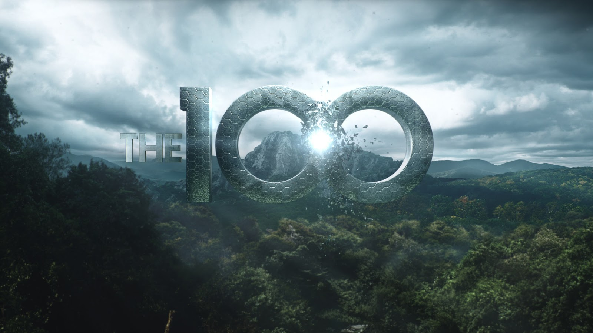
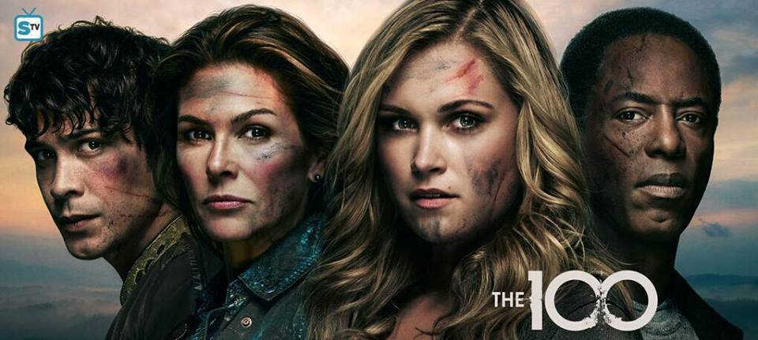
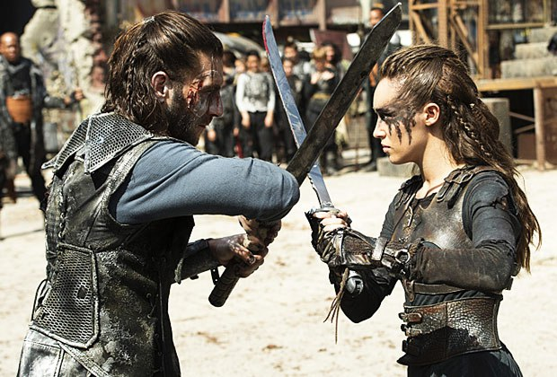
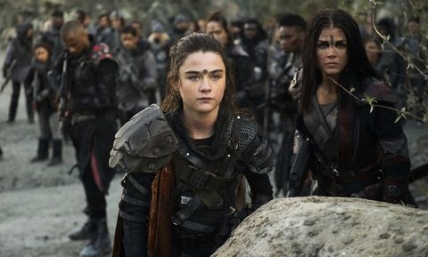
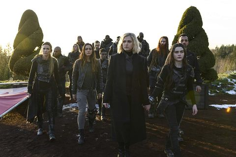
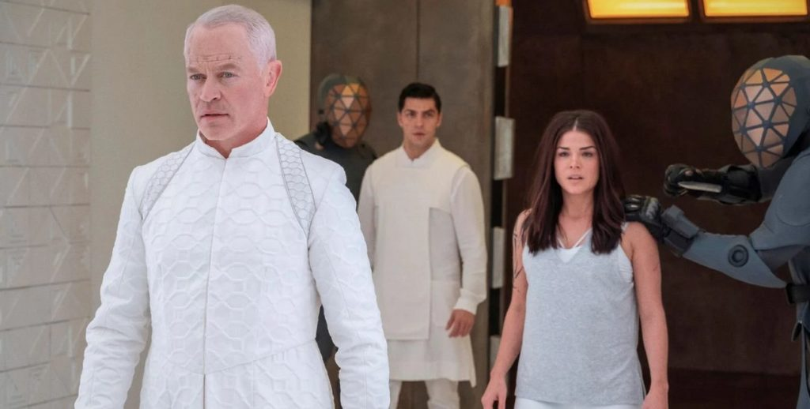

|  |
INTRODUCCIÓN
The 100. Serie de televisión estadounidense de ciencia ficción y drama ,creada por Jason Rothenberg, basada en la novela del mismo nombre escrita por Kass Morgan. La serie sigue a unos delincuentes juveniles que son enviados de vuelta a la Tierra para ver si el planeta puede ser habitado de nuevo, después de que fuera destruido por una guerra nuclear. Es protagonizada por Eliza Taylor, Paige Turco, Bob Morley, Marie Avgeropoulos y Henry Ian Cusick y fue estrenada el 19 de marzo de 2014.
SINOPSIS
'Los 100' es un drama post apocalíptico escrito por Jason Rothenberg (Body Politic), basado en los libros de Kass Morgan. La historia está centrada en lo que ocurre con la civilización casi cien años después de que una guerra nuclear la haya devastado.
Después de que ocurriese esa catastrófica guerra nuclear, se produjo una huida de los humanos que consiguieron sobrevivir. El futuro de la supervivencia de la raza humana está en manos de unos jóvenes delincuentes que consiguieron huir y salvarse de la guerra. Éstos viven desde entonces en una nave espacial. Desde la estación espacial The Ark, cien de los supervivientes son enviados de vuelta al planeta tierra para investigarlo y poder estudiar las posibilidades que existen de volver a colonizar la tierra.
La serie de CW está protagonizada por Eliza Taylor ('Patrick'), Marie Avgeropoulos ('Sensación de vivir: la nueva generación'), Thomas McDonell ('El reino prohibido'), Bobby Morley ('Road Train'), Eli Goree ('Sobrenatural'), Christopher Larkin ('A very Natural Thing') y Devon Bostick ('Small Time'), entre otros.
RENOVACIONES
El 8 de mayo de 2014, The CW anunció la renovación de la serie para una segunda temporada, que fue estrenada el 22 de octubre de 2014 y consta de 16 episodios.El 11 de enero de 2015, la serie fue renovada para una tercera temporada, que fue estrenada el 21 de enero de 2016.
PRIMERA TEMPORADA
 |
Noventa y siete años atrás, la Tierra fue destruida por una guerra nuclear. Solo cuatrocientas personas lograron salvarse en doce naves que fueron enviadas al espacio.
En el presente, las doce naves están conectadas como una sola llamada El Arca, que ha visto incrementar su población a casi cuatro mil personas, lo que ha derivado en la escasez de alimentos.
Las autoridades del Arca han tomado medidas como el control de natalidad y la pena de muerte, para garantizar su supervivencia.
En secreto, han enviado a un grupo de cien jóvenes delincuentes a la Tierra para averiguar si el planeta es habitable nuevamente. Para los chicos es un planeta totalmente desconocido y deben hacer a un lado sus diferencias para enfrentar los peligros y asegurar la supervivencia de la especie humana y la de ellos mismos.
SEGUNDA TEMPORADA
 |
Clarke, Finn, Raven y Bellamy luchan por rescatar a los cuarenta y siete chicos que continúan en Monte Weather antes de que sean drenados para tratar las enfermedades de los habitantes de la montaña.
Abby, Kane y Jaha intentan mantener a su gente unida y encontrar más sobrevivientes del resto de las naves. Ambos grupos deben enfrentarse a los hombres de la montaña, quienes interfieren sus comunicaciones y los atacan con peligrosas y tóxicas armas; así como a los terrícolas, cuya líder clama venganza por la masacre de los habitantes de una tribu a manos de Finn, por lo que Clarke debe tomar una dolorosa decisión.
TERCERA TEMPORADA
 |
Los habitantes de Arkadia, dirigidos por Abby, se mantienen en paz con los terrestres dirigido por Indra mientras buscan a otros supervivientes del Arca.
Mientras tanto, el equilibrio de fuerzas de los clanes terrestres pende de un hilo desde que la comandante Lexa hiciera un trato con el Monte Weather, que es tildado de muestra de debilidad y le ha hecho perder la confianza del clan de la Nación del Hielo. Clarke, que tras lo sucedido en el Monte Weather ha dejado a su gente, es buscada por las diferentes tribus terrestres que pretenden asesinarla y así obtener su fuerza.
CUARTA TEMPORADA
 |
Bajo la amenaza que dejó ALIE, Clarke vive con la duda de que en 6 meses, una radiación termine con el mundo y la humanidad, y con el paso del tiempo, se dará cuenta que es verdad. Arkadia solo contará con la capacidad de proteger a 100 personas durante años en que la tierra no podrá ser habitada, pero debido a un acto de Octavia, se verán obligados a hacer un pacto con Roan, líder de la Nación de Hielo, y compartirán el Arca durante la radiación a cambio de que Arkadia siga siendo un clan.
Cuando el Arca es destruído, Jaha emprende la búsqueda de un bunker secreto, donde podrán vivir allí hasta el fin de la radiación. Una vez encontrado, comenzará una batalla para saber qué clan podrá sobrevivir ahí adentro. Octavia tomará una decisión que desembarcará en un caos total.
Por otro lado, Raven intentará reconstruir una nave para volver a la estación espacial y salvar a Skaikru, pero su condición de salud comenzará a traerle problemas.
En su final de temporada, llamado Praimfaya, finalmente la radiación llega, dejando a los protagonistas en diferentes circunstancias durante los próximos años.
QUINTA TEMPORADA
 |
Seis años después de la fusión de los reactores nucleares, una nave de transporte de prisioneros llega al único punto verde que queda en la Tierra, donde Clarke y Madi, una terrestre Sangre Nocturna que también sobrevivió a la ola de radiación que barrió el planeta, han estado viviendo.
Los que sobrevivieron en el espacio y en el búnker regresan sanos y salvos al suelo. Comienza una lucha por el Shallow Valley entre los prisioneros y un nuevo clan unido, conocido como Wonkru, que resulta en una batalla que termina con la destrucción del valle.
Los sobrevivientes escapan al espacio y se quedan en criosueño mientras esperan que la Tierra se recupere. Sin embargo, Monty descubre que la Tierra aparentemente nunca se recuperará y, antes de morir de viejo, pone la nave prisión en rumbo a un nuevo planeta.
SEXTA TEMPORADA
 |
Después de 125 años en criosueño, Clarke, Bellamy y los demás se despiertan para descubrir que ya no están orbitando la Tierra y han sido llevados a un nuevo planeta habitable, Alfa, también conocida como Sanctum. Después de aterrizar en este planeta, descubren una nueva sociedad, dirigida por familias gobernantes conocidas como los Originales.
También descubren nuevos peligros, y un misterioso grupo rebelde, conocido como los Hijos de Gabriel.
La temporada termina con la muerte de la mayoría de los Originales, pero también con la pérdida de Abby Griffin y Marcus Kane.
SÉPTIMA TEMPORADA
 |
Junto a los habitantes de Sanctum tratan de encontrar una manera de vivir juntos en paz, después de las secuelas de los eventos de la temporada anterior, mientras luchan contra el Comandante Oscuro resucitado.
Al mismo tiempo, Clarke y otros entran en conflicto con los misteriosos Discípulos, humanos de otro planeta que están convencidos de que Clarke tiene la clave para ganar la última guerra que se avecina.
La temporada también explora la misteriosa Anomalía introducida en la sexta temporada, ahora identificada como un agujero de gusano que une seis planetas, uno de ellos la Tierra regenerada, entre sí.
EMISIÓN ORIGINAL
FECHAS DE LANZAMIENTO DE CADA TEMPORADA
PERSONAJES Y ACTORES
• Clarke Griffin (Eliza Taylor)
• Abigail Griffin (Paige Turco )
• Finn Collins (Thomas McDonell )
• Bellamy Blake (Bob Morley)
• Octavia Blake (Marie Avgeropoulos)
• Jasper Jordan (Devon Bostick)
• Raven Reyes (Lindsey Morgan)
• Lincoln (Ricky Whittle)
• Monty Green (Christopher Larkin)
• John Murphy (Richard Harmon)
• Wells Jaha (Eli Goree)
• Callie "Cece" Cartwig (Kelly Hu)
• Thelonious Jaha (Isaiah Washington)
• Marcus Kane (Henry Ian Cusick)
• Roan (Zach McGowan)
• Echo (Tasya Teles)
DESARROLLO
En enero de 2013, The CW anunció que ordenó la realización de un piloto basado en el libro de Kass Morgan, The 100.
El 9 de mayo, fue anunciado que la cadena recogería el piloto para desarrollar una serie para la temporada 2013-2014. Finalmente, el 12 de junio fue revelado que el estreno de la serie sería relegado para la mitad de la temporada.
SERIE PRECUELA
En octubre de 2019, Rothenberg comenzó a desarrollar una serie precuela de Los 100 para The CW. Se ordenó un episodio piloto de puerta trasera que se emitió como el octavo episodio, titulado «Anaconda», de la séptima y última temporada de Los 100.
La serie precuela está programada para mostrar los eventos «97 años antes de los sucesos de la serie original, comienza con el fin del mundo, un apocalipsis nuclear que borra a la mayoría de la población humana de la Tierra, y sigue a una banda de sobrevivientes en la tierra mientras aprenden a sobrellevar un mundo peligroso mientras luchan para crear una sociedad nueva y mejor a partir de las cenizas de lo que vino antes».
En febrero de 2020, se informó que Iola Evans, Adain Bradley y Leo Howard fueron elegidos como Callie, Reese y August, respectivamente
CASTING
El 28 de febrero de 2013, fueron anunciados Eliza Taylor como Clarke, la líder del grupo que es enviado a la Tierra; Marie Avgeropoulos como Octavia, una hija nacida ilegalmente que vive cautiva; Henry Ian Cusick como el concejal Kane, Bob Morley como Bellamy, el hermano de Octavia y Eli Goree como Wells Jaha.
En marzo de 2013, fueron anunciadas las incorporaciones de Paige Turco como Abbie, la madre de Clarke; Isaiah Washington, como Jaha, el líder de los sobrevivientes; Christopher Larkin como Monty, quien usa su inteligencia y sentido del humor para ayudar a Clarke y Kelly Hu como "Cece" Cartwig, la jefa de comunicaciones en la estación espacial.
Thomas McDonell como Finn y Devon Bostick como Jasper fueron anunciados pocos días después.
TRAILERS
TEMPORADAS
CURIOSIDADES DE LA SERIE
30 CURIOSIDADES
AUTORA DE ESTÁ PÁGINA WEB
SIGUEME EN FACEBOOK
SIGUEME EN INSTAGRAM
FUENTES